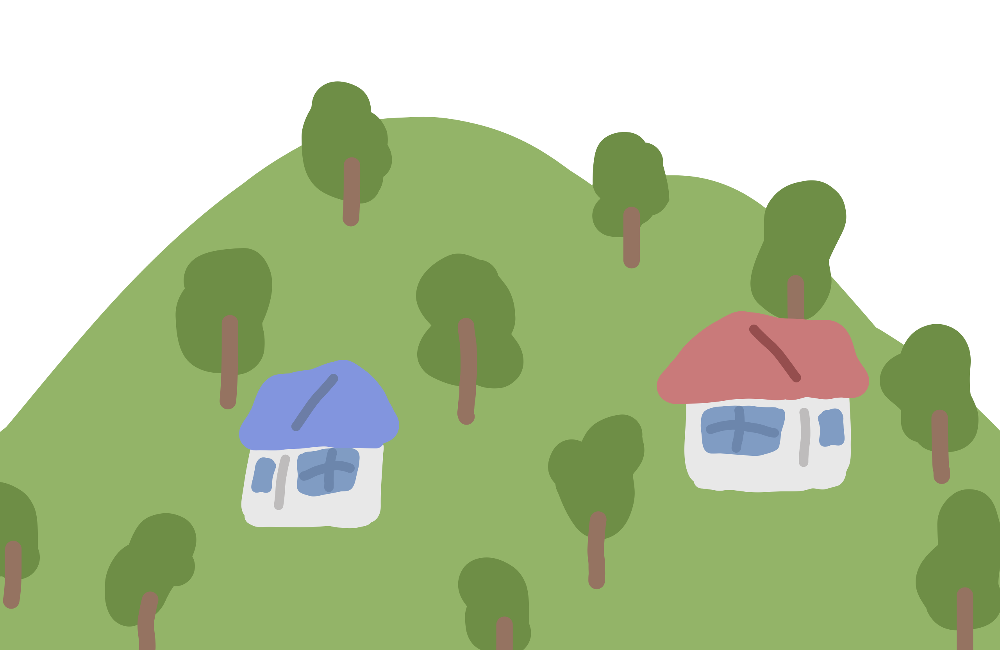
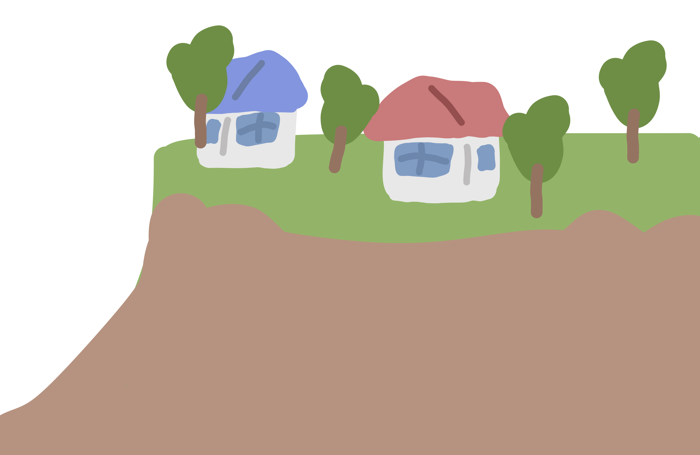
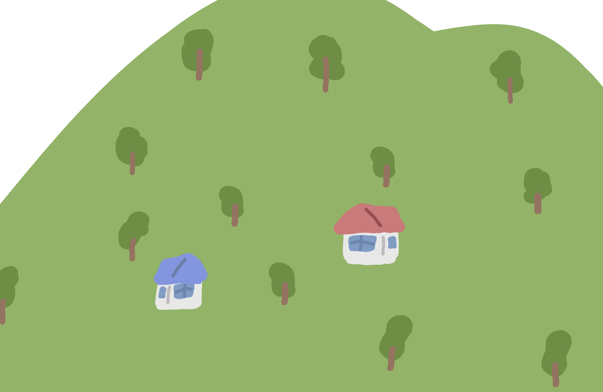

土石流
山腹や川底に石、土砂が長雨や集中豪雨などの影響で下方へ一気に押し流される


がけ崩れ
急な斜面が雨水の浸透や地震などの影響で、突然崩れ落ちる


地すべり
比較的穏やかな斜面が地下水などの影響で、下方へ移動する
静岡で特に多いのは土砂災害！
山腹や川底に石、土砂が長雨や集中豪雨などの影響で下方へ一気に押し流される
急な斜面が雨水の浸透や地震などの影響で、突然崩れ落ちる
比較的穏やかな斜面が地下水などの影響で、下方へ移動する


静岡市消防局の災害情報案内：（054-221-1199）自動音声で火災・救助・その他の災害情報を確認できる
災害用伝言ダイヤル：(171) 大規模災害時に、安否確認や連絡のために利用できる
静岡市役所いつでも電話サービス：（054-221-1111）市政に関する問い合わせや情報提供
救急安心電話相談窓口：(7119) 緊急性の低い症状で、救急車を呼ぶべきか迷う場合に相談できる